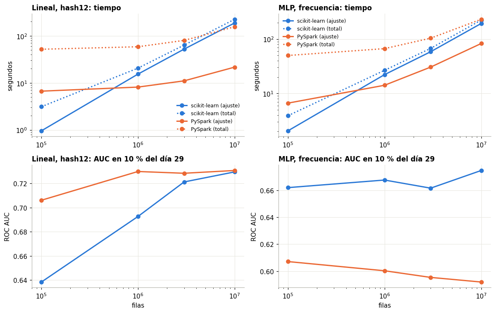
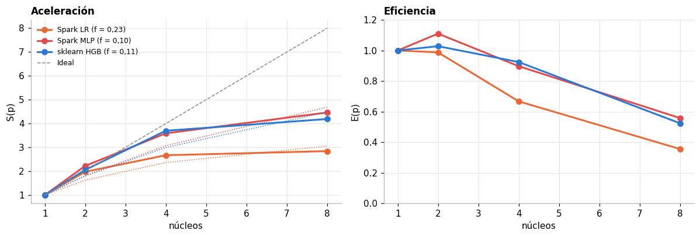
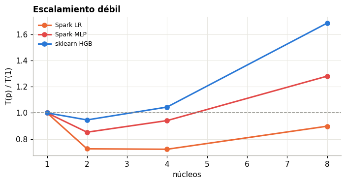
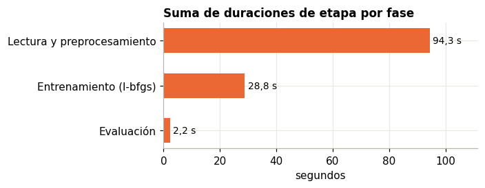

7. Benchmarking computacional#
Este capítulo responde P1: ¿a partir de qué volumen PySpark supera a scikit-learn en tiempo de entrenamiento sin degradar la calidad? Cada punto corrió en un proceso nuevo, con el equipo dedicado. Se separan lectura, preprocesamiento, entrenamiento y predicción.
Hardware: Intel Core i5-13420H (8 núcleos físicos, 4 P y 4 E, 12 hilos), 31,7 GB de RAM y SSD, en Windows 11. Spark corre en modo local con 14 GB de heap. Ese modo no tiene red ni fallos de nodo: es el mejor caso para Spark en coordinación, y el peor en memoria, porque driver y ejecutor son el mismo proceso.
Trabajo fijo por motor. LR: hash12 y 20 pasadas. MLP: frecuencia (d = 27), una capa de 50. El optimizador difiere: SGD o
Adam en scikit-learn y l-bfgs en Spark. Por eso cada punto reporta también su AUC.
import sys
sys.path.insert(0, "../src")
import numpy as np, pandas as pd, matplotlib.pyplot as plt
from scipy.optimize import curve_fit
from ctr.plots import C, style, es, miles
from ctr.config import RES
from ctr.monitor import read_jsonl
from IPython.display import display
style()
pd.set_option("display.max_columns", 30)
B = pd.DataFrame(read_jsonl(RES / "bench" / "points.jsonl"))
ENG = {"sk": ("scikit-learn", C["azul"]), "spark": ("PySpark", C["naranja"])}
7.1 Lectura#
I = pd.DataFrame(read_jsonl(RES / "bench" / "ingest.jsonl")).drop_duplicates(["step", "engine"], keep="last")
L = {"read_csv_count": "Contar filas en CSV", "csv_to_parquet": "CSV a Parquet por día", "csv_transform_noop": "Misma transformación a noop", "agg_csv": "Agregado sobre CSV", "agg_parquet": "Agregado sobre Parquet"}
i = I[I.step.isin(L)].assign(Paso=lambda d: d.step.map(L)).pivot(index="Paso", columns="engine", values="sec").round(2)
i.loc[list(L.values())]
| engine | duckdb | polars | spark |
|---|---|---|---|
| Paso | |||
| Contar filas en CSV | NaN | NaN | 7.16 |
| CSV a Parquet por día | 286.63 | NaN | NaN |
| Misma transformación a noop | NaN | NaN | 57.97 |
| Agregado sobre CSV | 5.12 | 8.31 | 22.68 |
| Agregado sobre Parquet | 0.10 | 0.27 | 6.51 |
La memoria de esa primera tabla no se reporta porque quedó contaminada por el proceso anterior. Spark gana a pandas por mucho, pero DuckDB y Polars ganan a Spark en una sola máquina: 0,1 y 0,3 segundos frente a 6,5 s sobre Parquet.
7.2 Punto de cruce#
c = B[B.exp == "cruce"].copy()
fig, ax = plt.subplots(2, 2, figsize=(11, 7))
res = []
for j, (m, t) in enumerate([("lr", "Lineal, hash12"), ("mlp", "MLP, frecuencia")]):
for e, (nom, co) in ENG.items():
d = c[(c.engine == e) & (c.model == m)].sort_values("n")
ax[0, j].plot(d.n, d.fit, marker="o", color=co, label=nom + " (ajuste)")
ax[0, j].plot(d.n, d.read + d.prep + d.fit, marker="o", ls=":", color=co, label=nom + " (total)")
ax[1, j].plot(d.n, d.auc, marker="o", color=co, label=nom)
ax[0, j].set_xscale("log"); ax[0, j].set_yscale("log"); ax[0, j].set(title=f"{t}: tiempo", ylabel="segundos"); ax[0, j].legend(fontsize=8)
ax[1, j].set_xscale("log"); ax[1, j].set(title=f"{t}: AUC en 10 % del día 29", xlabel="filas", ylabel="ROC AUC")
a, b = c[(c.engine == "sk") & (c.model == m)].sort_values("n"), c[(c.engine == "spark") & (c.model == m)].sort_values("n")
# ajuste log-log de cada curva y cruce analítico
for col, nom in [("fit", "solo ajuste"), ("tot", "lectura + prep. + ajuste")]:
ya = a.fit if col == "fit" else a.read + a.prep + a.fit
yb = b.fit if col == "fit" else b.read + b.prep + b.fit
pa, pb = np.polyfit(np.log(a.n), np.log(ya), 1), np.polyfit(np.log(b.n), np.log(yb), 1)
x = np.exp((pb[1] - pa[1]) / (pa[0] - pb[0])) if pa[0] != pb[0] else np.nan
res.append(dict(Modelo=t, Medida=nom, **{"Exponente sklearn": pa[0], "Exponente Spark": pb[0], "Cruce estimado (filas)": x}))
plt.tight_layout(); plt.show()
pd.DataFrame(res).round(2)

| Modelo | Medida | Exponente sklearn | Exponente Spark | Cruce estimado (filas) | |
|---|---|---|---|---|---|
| 0 | Lineal, hash12 | solo ajuste | 1.15 | 0.24 | 680090.74 |
| 1 | Lineal, hash12 | lectura + prep. + ajuste | 0.92 | 0.22 | 4944475.11 |
| 2 | MLP, frecuencia | solo ajuste | 0.98 | 0.54 | 853661.95 |
| 3 | MLP, frecuencia | lectura + prep. + ajuste | 0.87 | 0.32 | 7716367.83 |
c.assign(motor=c.engine.map(lambda e: ENG[e][0]))[["motor", "model", "n", "read", "prep", "fit", "pred", "gb", "rows_s_fit", "auc"]].sort_values(["model", "motor", "n"]).round(3).reset_index(drop=True)
| motor | model | n | read | prep | fit | pred | gb | rows_s_fit | auc | |
|---|---|---|---|---|---|---|---|---|---|---|
| 0 | PySpark | lr | 100110 | 6.478 | 38.668 | 6.668 | 5.152 | 8.418 | 15013.557 | 0.706 |
| 1 | PySpark | lr | 999123 | 6.325 | 44.113 | 8.135 | 5.511 | 8.575 | 122814.000 | 0.730 |
| 2 | PySpark | lr | 3000326 | 5.738 | 63.150 | 11.042 | 5.402 | 9.580 | 271729.798 | 0.728 |
| 3 | PySpark | lr | 10003138 | 5.469 | 128.610 | 21.612 | 6.937 | 14.967 | 462843.546 | 0.731 |
| 4 | scikit-learn | lr | 100110 | 0.785 | 1.373 | 0.957 | 0.061 | 2.011 | 104596.456 | 0.638 |
| 5 | scikit-learn | lr | 999123 | 0.724 | 4.477 | 15.352 | 0.085 | 3.183 | 65080.449 | 0.693 |
| 6 | scikit-learn | lr | 3000326 | 0.835 | 10.520 | 52.147 | 0.047 | 6.786 | 57535.796 | 0.721 |
| 7 | scikit-learn | lr | 10003138 | 1.131 | 35.953 | 187.751 | 0.066 | 17.242 | 53278.784 | 0.730 |
| 8 | PySpark | mlp | 100110 | 6.263 | 36.920 | 6.638 | 4.671 | 7.950 | 15081.707 | 0.607 |
| 9 | PySpark | mlp | 999123 | 6.182 | 46.284 | 14.132 | 4.069 | 8.368 | 70698.759 | 0.600 |
| 10 | PySpark | mlp | 3000326 | 5.847 | 67.357 | 30.502 | 4.348 | 9.109 | 98365.680 | 0.595 |
| 11 | PySpark | mlp | 10003138 | 5.949 | 141.950 | 82.758 | 5.612 | 14.272 | 120872.404 | 0.592 |
| 12 | scikit-learn | mlp | 100110 | 0.664 | 1.178 | 2.057 | 0.159 | 1.965 | 48678.816 | 0.662 |
| 13 | scikit-learn | mlp | 999123 | 0.727 | 3.714 | 22.151 | 0.208 | 2.844 | 45105.355 | 0.668 |
| 14 | scikit-learn | mlp | 3000326 | 0.706 | 8.162 | 58.438 | 0.129 | 5.622 | 51342.366 | 0.662 |
| 15 | scikit-learn | mlp | 10003138 | 0.881 | 29.155 | 193.115 | 0.210 | 17.573 | 51798.904 | 0.675 |
Control de hilos. scikit-learn corre con un hilo de BLAS. Con 8 hilos, el MLP es más lento, porque sus matrices de 27 x 50 son demasiado pequeñas para repartir:
x = B[B.exp.isin(["cruce", "blas8"]) & (B.engine == "sk") & (B.model == "mlp") & (B.n > 2e6)]
x.assign(hilos=np.where(x.exp == "blas8", 8, 1)).pivot(index="n", columns="hilos", values="fit").round(1).rename_axis(columns="Hilos BLAS: ajuste (s)")
| Hilos BLAS: ajuste (s) | 1 | 8 |
|---|---|---|
| n | ||
| 3000326 | 58.4 | 94.1 |
| 10003138 | 193.1 | 305.8 |
Respuesta a P1.
Modelo lineal: Spark gana desde unos 5 millones de filas sin perder calidad. En el ajuste solo, el cruce estimado está en unas 680 mil filas. Contando lectura y preprocesamiento sube a unos 4,9 millones, porque Spark arrastra unos 45 s fijos de preparación. Con 10 millones, Spark tarda 156 s en total frente a 225 s, y su ajuste es 8,7 veces más rápido (21,6 s frente a 187,8 s). El AUC es igual (0,731 frente a 0,730), y con menos filas Spark es mejor: con 20 pasadas, l-bfgs converge y SGD todavía no.
MLP: no hay volumen en el que Spark gane sin perder calidad. Ajusta más rápido desde unas 850 mil filas. En tiempo total no gana ni con 10 millones (231 s frente a 223 s): la recta log-log extrapola un cruce cerca de 7,7 millones, pero el punto medido lo contradice. Además, su AUC (0,59 a 0,61) queda 0,07 a 0,08 por debajo del de scikit-learn (0,66 a 0,67) en todos los volúmenes. Con frecuencia y sigmoide, 20 iteraciones de l-bfgs no alcanzan lo que logran 10 épocas de Adam en minilotes.
Los exponentes explican el cruce. En scikit-learn el tiempo crece casi lineal con
n(exponente de 0,9 a 1,15). En Spark crece con exponente de 0,2 a 0,5: con pocas filas domina un costo fijo (arranque de la JVM, planificación de tareas y las 23 agregaciones del preprocesamiento).En predicción, scikit-learn gana siempre. Puntúa de 2 a 8 millones de filas por segundo, frente a 55 a 95 mil de Spark, que incluye transformar el pipeline y materializar el resultado.
Memoria. Spark parte de unos 8 GB, que son el heap reservado de la JVM. scikit-learn crece con
ny lo alcanza con 10 millones de filas (17 GB frente a 15 GB).
Los optimizadores difieren entre motores (SGD o Adam frente a l-bfgs), así que el cruce compara implementaciones completas, no solo motores. Por eso cada punto reporta su AUC.
7.3 Escalamiento fuerte, aceleración y ley de Amdahl#
Con 2 millones de filas fijas y 1, 2, 4 y 8 núcleos: \(S(p) = T_1 / T_p\) y \(E(p) = S(p) / p\). La ley de Amdahl es \(S(p) = 1 / (f + (1 - f) / p)\), donde \(f\) es la fracción secuencial.
F = B[B.exp == "fuerte"].copy()
def amdahl(p, f): return 1 / (f + (1 - f) / p)
fig, ax = plt.subplots(1, 2, figsize=(11, 3.8))
ps = np.array([1, 2, 4, 8]); out = []
for (e, m), co, nom in [(("spark", "lr"), C["naranja"], "Spark LR"), (("spark", "mlp"), C["rojo"], "Spark MLP"), (("sk", "hgb"), C["azul"], "sklearn HGB")]:
d = F[(F.engine == e) & (F.model == m)].sort_values("cores")
if len(d) < 2: continue
S = d.fit.iloc[0] / d.fit.values; Ef = S / d.cores.values
f = curve_fit(amdahl, d.cores.values, S, p0=[.1], bounds=(0, 1))[0][0]
ax[0].plot(d.cores, S, marker="o", color=co, label=f"{nom} (f = {es(f, 2)})"); ax[0].plot(ps, amdahl(ps, f), color=co, ls=":", lw=1)
ax[1].plot(d.cores, Ef, marker="o", color=co, label=nom)
out.append(dict(Modelo=nom, f=f, **{f"S({p})": s for p, s in zip(d.cores, S)}, **{f"E({p})": x for p, x in zip(d.cores, Ef)}))
ax[0].plot(ps, ps, color=C["gris"], ls="--", lw=1, label="Ideal"); ax[0].set(title="Aceleración", xlabel="núcleos", ylabel="S(p)"); ax[0].legend(fontsize=8)
ax[1].set(title="Eficiencia", xlabel="núcleos", ylabel="E(p)", ylim=(0, 1.2)); plt.tight_layout(); plt.show()
pd.DataFrame(out).round(2).set_index("Modelo")

| f | S(1) | S(2) | S(4) | S(8) | E(1) | E(2) | E(4) | E(8) | |
|---|---|---|---|---|---|---|---|---|---|
| Modelo | |||||||||
| Spark LR | 0.23 | 1.0 | 1.97 | 2.67 | 2.84 | 1.0 | 0.99 | 0.67 | 0.36 |
| Spark MLP | 0.10 | 1.0 | 2.22 | 3.59 | 4.46 | 1.0 | 1.11 | 0.90 | 0.56 |
| sklearn HGB | 0.11 | 1.0 | 2.06 | 3.70 | 4.19 | 1.0 | 1.03 | 0.92 | 0.52 |
Fracción secuencial de Amdahl, ajustada a la aceleración del ajuste. HGB obtiene f = 0,11, el MLP de Spark 0,10 y la LR de Spark 0,23. Con la LR, la aceleración no puede pasar de 1/f, es decir 4,3, con ningún número de núcleos. Cada iteración de l-bfgs agrega un gradiente de 4.097 dimensiones con
treeAggregatey actualiza en el driver. Con 2 millones de filas, el trabajo por iteración es poco frente a esa parte serial.El preprocesamiento de Spark sí se paraleliza: baja de 166 s con 1 núcleo a 53 s con 8 (3,1 veces). Incluyéndolo, f sube a 0,19 a 0,23 en los tres modelos.
De 4 a 8 núcleos casi no se gana. La CPU tiene 4 núcleos de rendimiento y 4 de eficiencia, y la frecuencia turbo baja al activar más núcleos. El ajuste de Amdahl absorbe esa heterogeneidad como si fuera fracción secuencial, así que f es una cota pesimista para un nodo homogéneo.
7.4 Escalamiento débil#
500 mil filas por núcleo. El caso ideal mantiene el tiempo constante.
D = B[B.exp == "debil"].copy()
fig, ax = plt.subplots(figsize=(6.5, 3.5))
for (e, m), co, nom in [(("spark", "lr"), C["naranja"], "Spark LR"), (("spark", "mlp"), C["rojo"], "Spark MLP"), (("sk", "hgb"), C["azul"], "sklearn HGB")]:
d = D[(D.engine == e) & (D.model == m)].sort_values("cores")
if len(d): ax.plot(d.cores, d.fit / d.fit.iloc[0], marker="o", color=co, label=nom)
ax.axhline(1, color=C["gris"], ls="--", lw=1); ax.set(title="Escalamiento débil", xlabel="núcleos", ylabel="T(p) / T(1)"); ax.legend(fontsize=8)
plt.tight_layout(); plt.show()

HGB se mantiene casi constante hasta 4 núcleos (0,95 a 1,04), y con 8 sube a 1,69. Los núcleos de eficiencia y el ancho de banda de memoria que comparten los histogramas lo frenan.
En Spark, el tiempo con 2 y 4 núcleos es menor que con 1 (0,72 a 0,94). El punto de 1 núcleo está penalizado: procesa en serie al menos 8 particiones con un solo slot, y la sobrecarga por tarea e iteración no se reparte. No se aisló la causa exacta. Con 8 núcleos, la LR queda en 0,90 y el MLP en 1,28.
Conclusión: en una sola máquina, el escalamiento débil es bueno hasta los 4 núcleos de rendimiento. Pasar a 8 cuesta eficiencia en todos los modelos, no solo en Spark.
7.5 Evidencia de Spark#
Fuente. Sin winutils.exe, Spark no puede escribir el registro de eventos en Windows: Hadoop exige permisos POSIX al crear el
archivo (Shell.getSetPermissionCommand). Por eso 05_benchmark.py guarda, antes de cerrar la sesión, la API REST de la Spark UI
en vivo (/api/v1/applications/<id>/jobs, stages, allexecutors y sql). Son los mismos datos que muestran las pestañas Jobs,
Stages, Executors y SQL. El punto medido es el MLP de Spark con 3 millones de filas y 8 núcleos (results/bench/spark_ui/), y
scripts/05b_spark_ui.py los resume.
U = pd.read_csv(RES / "bench" / "spark_ui_resumen.csv", index_col=0).valor
G = pd.read_csv(RES / "bench" / "spark_ui_stages.csv")
k = {"jobs": "Jobs", "etapas_completas": "Etapas ejecutadas", "etapas_saltadas": "Etapas saltadas (reusan shuffle o caché)", "tareas": "Tareas",
"tareas_fallidas": "Tareas fallidas", "gc_s": "GC de la JVM (s)", "entrada_gb": "Leído del Parquet (GB)", "shuffle_escr_mb": "Shuffle escrito (MB)",
"cache_mem_mb": "Caché en memoria (MB)", "cache_disco_mb": "Caché en disco (MB)", "spill_disco_mb": "Spill a disco (MB)"}
display(U[list(k)].rename(k).round(1).to_frame("Valor"))
f = G.groupby("fase")[["dur_s", "tareas", "cpu_s", "gc_s"]].sum().sort_values("dur_s")
fig, ax = plt.subplots(figsize=(6.5, 2.6))
ax.barh(f.index, f.dur_s, color=C["naranja"], height=.55)
for i, v in enumerate(f.dur_s): ax.text(v + 1, i, es(v, 1) + " s", va="center", fontsize=9)
ax.set(title="Suma de duraciones de etapa por fase", xlabel="segundos", xlim=(0, f.dur_s.max() * 1.18)); plt.tight_layout(); plt.show()
G[["fase", "llamada", "etapas", "tareas", "dur_s", "cpu_s", "gc_s", "shuffle_escr_mb", "mem_pico_mb"]].head(6).round(1)
| Valor | |
|---|---|
| Jobs | 205.0 |
| Etapas ejecutadas | 230.0 |
| Etapas saltadas (reusan shuffle o caché) | 199.0 |
| Tareas | 4525.0 |
| Tareas fallidas | 0.0 |
| GC de la JVM (s) | 2.0 |
| Leído del Parquet (GB) | 21.9 |
| Shuffle escrito (MB) | 228.1 |
| Caché en memoria (MB) | 338.6 |
| Caché en disco (MB) | 6.9 |
| Spill a disco (MB) | 0.0 |

| fase | llamada | etapas | tareas | dur_s | cpu_s | gc_s | shuffle_escr_mb | mem_pico_mb | |
|---|---|---|---|---|---|---|---|---|---|
| 0 | Lectura y preprocesamiento | $anonfun$withThreadLocalCaptured$2 @ Completab... | 80 | 2272 | 69.8 | 247.1 | 6.7 | 191.7 | 14552.4 |
| 1 | Entrenamiento (l-bfgs) | treeAggregate @ LBFGS.scala | 46 | 460 | 26.9 | 183.8 | 1.2 | 4.3 | 0.2 |
| 2 | Lectura y preprocesamiento | first @ C | 93 | 1703 | 20.1 | 71.2 | 3.8 | 24.2 | 2112.0 |
| 3 | Lectura y preprocesamiento | count @ NativeMethodAccessorImpl.java | 2 | 24 | 3.6 | 20.7 | 0.3 | 0.0 | 12935.4 |
| 4 | Entrenamiento (l-bfgs) | count @ LBFGS.scala | 1 | 16 | 1.9 | 10.5 | 0.4 | 0.0 | 0.0 |
| 5 | Evaluación | map @ BinaryClassificationMetrics.scala | 1 | 8 | 1.0 | 5.2 | 0.0 | 4.1 | 28.5 |
Lo que muestra la UI:
El entrenamiento son 46 etapas
treeAggregatedeLBFGS.scala, de unos 0,6 s cada una. Las 20 iteraciones evalúan la función unas 2,3 veces cada una, por la búsqueda de línea. Cada evaluación recorre las 8 particiones en caché: 339 MB en memoria y 7 MB en disco, sin spill. El MLP con frecuencia (d = 27) cabe con holgura. Con hashing de 2^12, la misma caché densa ocuparía unas 150 veces más (capítulo 5).El preprocesamiento domina: unos 94 s de etapas y 4.000 de las 4.525 tareas. Spark leyó 21,9 GB del Parquet porque el
Preprecorre la entrada una vez por cada agregación. La entrada no se persiste antes de los conteos, y esa es la optimización más directa que queda.Sin fallos y con poco GC: ninguna tarea falló, no hubo spill y la JVM gastó 2 s en GC. De las 429 etapas, 199 se saltaron porque AQE reutilizó resultados de shuffle ya calculados.
Las duraciones de etapa se suman y pueden solaparse, así que no equivalen al tiempo de pared.
7.6 Costo estimado en la nube#
Se valora cada corrida medida como si fuera en una instancia de AWS de capacidad parecida: m6i.2xlarge, con 8 vCPU y 32 GiB. Se usan precios de lista bajo demanda en us-east-1: 0,384 USD por hora, más 0,096 USD por hora de recargo si se usa EMR. Son precios de referencia y pueden cambiar. Se asume además que esa instancia tarda lo mismo que el equipo de las mediciones.
P_EC2, P_EMR = 0.384, 0.096
k = c.assign(total=c.read + c.prep + c.fit + c.pred, motor=c.engine.map(lambda e: ENG[e][0]))
k["USD EC2"] = k.total / 3600 * P_EC2
k["USD EMR"] = np.where(k.engine == "spark", k.total / 3600 * (P_EC2 + P_EMR), np.nan)
k["USD por millón de filas"] = k["USD EC2"] / (k.n / 1e6)
k[["motor", "model", "n", "total", "USD EC2", "USD EMR", "USD por millón de filas", "auc"]].sort_values(["model", "n", "motor"]).round(4).reset_index(drop=True)
| motor | model | n | total | USD EC2 | USD EMR | USD por millón de filas | auc | |
|---|---|---|---|---|---|---|---|---|
| 0 | PySpark | lr | 100110 | 56.9660 | 0.0061 | 0.0076 | 0.0607 | 0.7061 |
| 1 | scikit-learn | lr | 100110 | 3.1756 | 0.0003 | NaN | 0.0034 | 0.6384 |
| 2 | PySpark | lr | 999123 | 64.0841 | 0.0068 | 0.0085 | 0.0068 | 0.7299 |
| 3 | scikit-learn | lr | 999123 | 20.6380 | 0.0022 | NaN | 0.0022 | 0.6927 |
| 4 | PySpark | lr | 3000326 | 85.3305 | 0.0091 | 0.0114 | 0.0030 | 0.7285 |
| 5 | scikit-learn | lr | 3000326 | 63.5483 | 0.0068 | NaN | 0.0023 | 0.7213 |
| 6 | PySpark | lr | 10003138 | 162.6282 | 0.0173 | 0.0217 | 0.0017 | 0.7308 |
| 7 | scikit-learn | lr | 10003138 | 224.9005 | 0.0240 | NaN | 0.0024 | 0.7296 |
| 8 | PySpark | mlp | 100110 | 54.4914 | 0.0058 | 0.0073 | 0.0581 | 0.6071 |
| 9 | scikit-learn | mlp | 100110 | 4.0571 | 0.0004 | NaN | 0.0043 | 0.6619 |
| 10 | PySpark | mlp | 999123 | 70.6670 | 0.0075 | 0.0094 | 0.0075 | 0.6003 |
| 11 | scikit-learn | mlp | 999123 | 26.7992 | 0.0029 | NaN | 0.0029 | 0.6675 |
| 12 | PySpark | mlp | 3000326 | 108.0548 | 0.0115 | 0.0144 | 0.0038 | 0.5954 |
| 13 | scikit-learn | mlp | 3000326 | 67.4343 | 0.0072 | NaN | 0.0024 | 0.6615 |
| 14 | PySpark | mlp | 10003138 | 236.2696 | 0.0252 | 0.0315 | 0.0025 | 0.5920 |
| 15 | scikit-learn | mlp | 10003138 | 223.3609 | 0.0238 | NaN | 0.0024 | 0.6746 |
El costo de cómputo es despreciable en ambos motores: 3 centavos de dólar o menos por corrida, incluso con 10 millones de filas. Con 10 millones, el modelo lineal cuesta 0,017 USD en Spark y 0,024 USD en scikit-learn: la diferencia es la de tiempo.
Con pocas filas, Spark cuesta de 13 a 18 veces más, por su costo fijo: 0,006 USD frente a 0,0003 o 0,0004 USD con 100 mil filas.
Lo que domina en la práctica no aparece en la tabla. Un clúster de EMR cobra los nodos maestro y de trabajo mientras arranca (varios minutos) y mientras está ocioso. Además, el tiempo de las personas para depurar Spark supera con creces el de máquina. En este proyecto, sortear
winutilsy el OOM del MLP costó horas.Spark se paga solo si los datos no caben en una máquina, como Criteo 1TB. Ahí la alternativa no es scikit-learn más lento, sino que scikit-learn no corre. Con Avazu en una instancia de 32 GiB, la opción barata es scikit-learn, o la LR de Spark si se quiere el ajuste más rápido con todos los datos.